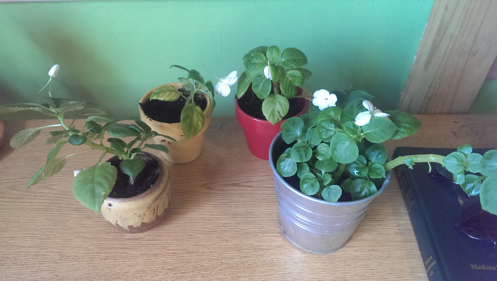
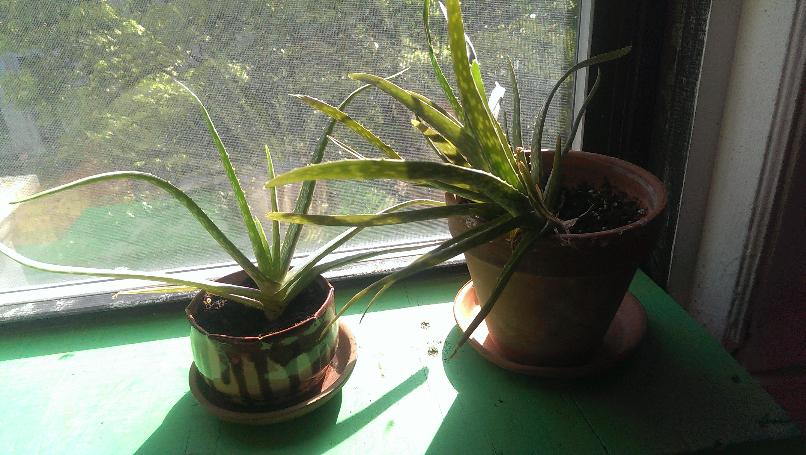
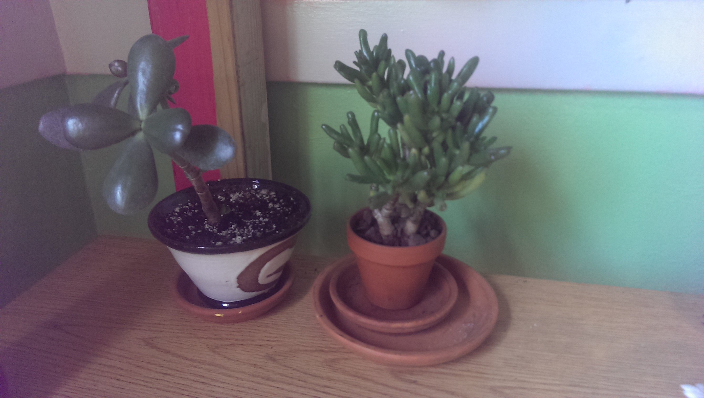
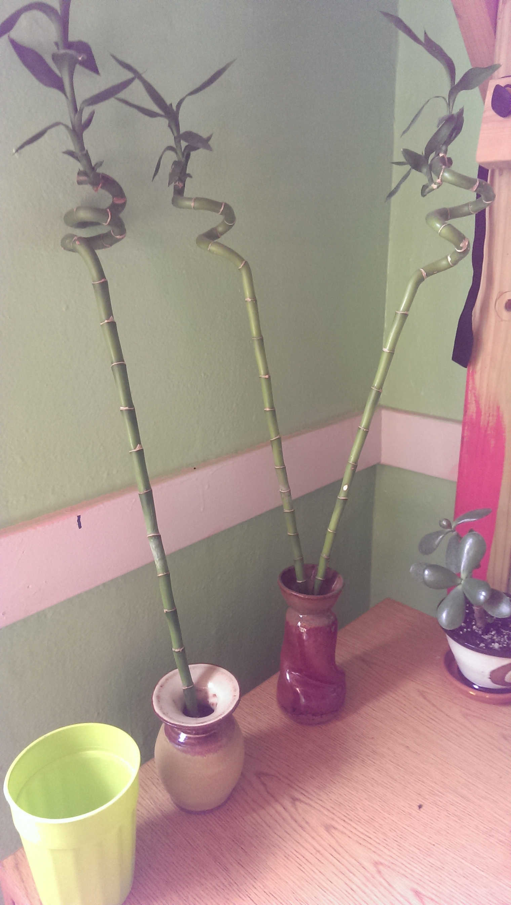

Jess's Guide to Plant Care in order of watering frequency

Impatiens
Impatiens need water every couple of days, or more if they're in the sun. They will flower more if left in the sun.
If they get too dry, their leaves will droop. That's how I normally know to water them. Their flowers are very fragile and will fall off for any reason.

Cane Begonias
Cane begonias need water when the soil is dry an inch down, so probably around a couple times a week. Don't overwater; they need only as much as can seep into the dirt within a couple seconds.
If they get too dry, their cane may get weak and droopy. If this happens too much, they could snap! (That's why I have two now)
They don't seem to prefer sunlight too much. They should be fine in sun or shade.

Aloe
Aloe don't need water often; once a week should be sufficient. They prefer some sunlight, but too much and they may start to turn brown.
If they get too dry, their leaves will droop. That's how I normally know to water them. Their flowers are very fragile and will fall off for any reason.

Jades
Water occasionally, only when their soil is dry. Probably once a week or less, unless they're in the sun in which case they'll dry out faster. They don't seem to care whether they're in the sun or not.

Bamboo
The bamboo are only in water. Water as needed; make sure their water is always full-ish.
I've never put them in the sun, but I bet they wouldn't mind it.
{kind=link}
{kind=link}
{kind=link}
{kind=link}